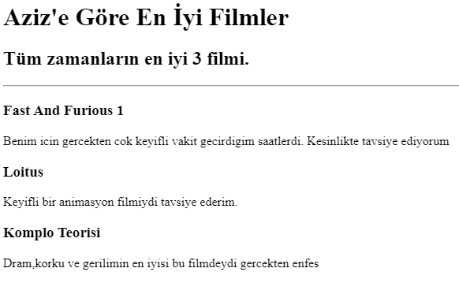
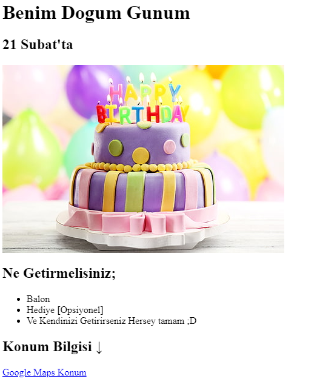

<!-- TODO 1: Create the HTML Boilerplate -->
<!DOCTYPE html>
<html lang="tr">
<head>
    <meta charset="UTF-8">
    <meta name="viewport" content="width=device-width, initial-scale=1.0">
    <title>Document</title>
</head>
<body>
    
</body>
</html>

<!-- TODO 2: Add Your previous projects' HTML into the public folder -->
<h1>Aziz Demirkol'un Portföyü</h1>

<h2>Ben Full Stack Web Developer'ım</h2>

<hr \>


<!-- TODO 3: Take screenshots of your project previews and add the images to the images folder -->

<a href="./public/movie-ranking.html"><h1>Film Sıralaması Projesi</h1></a>



<a href="./assets/images/birthday-invite.png"><h1>Doğum Günü Davetiyesi</h1></a>



<hr \>

 <a href="./public/about.html">Hakkımda</a>

 <a href="./public/contact.html">İletişim</a>


<!-- TODO 4: Add titles/subtitles etc. -->

<!-- TODO 5: Add a link to the project pages -->

<!-- TODO 6: Add images to show the project previews
HINT for TODO 6: You can use the height attribute set to 200 to make the image smaller:
https://developer.mozilla.org/en-US/docs/Web/HTML/Element/img#attr-height -->

<!-- TODO 7: Add the Contact Me and About Me page links -->